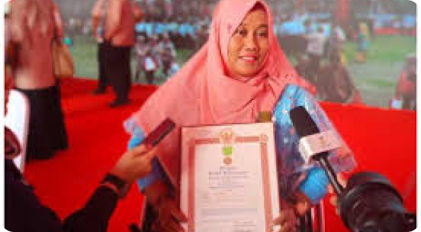

Irma Suryanti, Penyandang Disabilitas yang Berhasil Dirikan Pusat UMKM

Profil
Irma Suryanti (38), lahir di Desa Karangsari, Kecamatan Buayan, Kabupaten Kebumen, Jawa Tengah.
Ia adalah seorang wanita luar biasa yang tidak hanya sukses dalam usaha UMKM, tetapi juga menjadi inspirasi bagi banyak penyandang disabilitas di Indonesia.
Sejak usia 4 tahun, Irma mengalami kelumpuhan akibat polio. Meski begitu, ia tidak pernah membiarkan keadaan menghalangi semangatnya untuk berkarya.
Setelah menikah pada tahun 1999, ia mulai merintis usaha pembuatan karpet dan keset dari rumah. Dengan tekad kuat dan kerja keras, usahanya tumbuh pesat hingga memiliki lebih dari 2.500 karyawan, 150 di antaranya penyandang disabilitas.
Bermula dari Nol,
Kini Menjangkau Dunia Internasional
Awal mula usahanya dimulai dengan membuat keset dari bahan sisa yang dipakai sendiri, kemudian dilirik oleh tetangga sekitar.
Melihat potensi tersebut, Irma bersama suaminya, Agus Priyanto — seorang pelukis berbakat yang juga penyandang disabilitas — membuka usaha resmi di Semarang dengan beberapa karyawan.
Pada tahun 2002, mereka pindah ke Kebumen dan memberikan nama usahanya sebagai Mutiara Equipment. Seiring waktu, Irma mendirikan Pusat UMKM Penyandang Disabilitas untuk memberdayakan ibu-ibu rumah tangga agar bisa mandiri melalui pembuatan keset.
Dari usaha kecil yang sempat diremehkan, kini produk buatan tim Irma telah menembus pasar internasional seperti Australia, Jerman, Jepang, hingga Turki. Bahkan, ia berhasil mendirikan Koperasi Simpan Pinjam yang menampung ribuan pengrajin di berbagai daerah.
Penghargaan & Dampak Positif
Perjalanan hidup Irma yang penuh keteguhan dan semangat tidak luput dari apresiasi. Ia telah menerima berbagai penghargaan, antara lain:
- Penghargaan Jaiki Jepang
- SCTV Awards 2012
- Perempuan Berprestasi dari Bupati Kebumen (2008)
Lebih dari sekadar bisnis, Irma ingin menunjukkan bahwa disabilitas bukanlah batasan untuk sukses.
Ia membuktikan bahwa setiap orang punya potensi untuk menjadi mandiri, produktif, dan memberikan manfaat bagi sesama.
Pesan Inspirasional
“Disabilitas bukanlah kelemahan, tapi cara unik seseorang menjalani hidup. Di balik keterbatasan, ada kekuatan yang luar biasa jika kita percaya pada diri sendiri.”
Kisah Irma Suryanti menjadi bukti nyata bahwa semangat pantang menyerah, keyakinan, dan kepedulian terhadap sesama dapat menciptakan perubahan besar.
Ia bukan hanya pengusaha sukses, tetapi juga sahabat bagi penyandang disabilitas yang ingin bangkit dan berdaya.